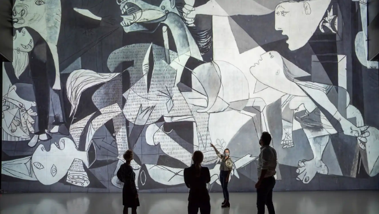

 Reflejo fiel de una época y de unas luctuosas y dramáticas circunstancias, el lienzo Guernica nació para formar parte del Pabellón Español en la Exposición Internacional de París, de 1937. El motivo que impulsó a Pablo Picasso a realizar la escena representada en esta gran pintura fue la noticia de los bombardeos efectuados por la aviación alemana sobre la villa vasca que da nombre a la obra, conocidos por el artista a través de las dramáticas fotografías publicadas, entre otros diarios, por el periódico francés L'Humanité. A pesar de ello, tanto los bocetos como el cuadro no contienen ninguna alusión a sucesos concretos, sino que, por el contrario, constituyen un alegato genérico contra la barbarie y el terror de la guerra. Concebido como un gigantesco cartel, el gran lienzo es el testimonio del horror que supuso la Guerra Civil española, así como la premonición de lo que iba a suceder en la Segunda Guerra Mundial.